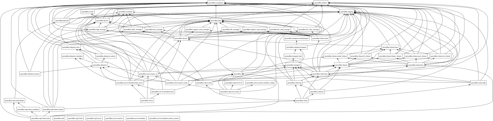

Architecture
The internal structure of pymodbus is a bit complicated, mostly due to the mixture of sync and async.
The overall architecture can be viewed as:
Client classes (interface to applications) mixin (interface with all requests defined as methods) transaction (handles transactions and allow concurrent calls) framers (add pre/post headers to make a valid package) transport (handles actual transportation)
Server classes (interface to applications) datastores (handles registers/values to be returned) transaction (handles transactions and allow concurrent calls) framers (add pre/post headers to make a valid package) transport (handles actual transportation)
In detail the packages can viewed as:

In detail the classes can be viewed as: